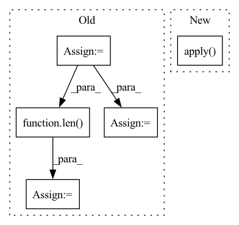

Pattern ID :20619

Before Change
def forward(self, tsrInput):
// Quantize to ints
tsrOut: torch.Tensor = tsrInput.int().float()
self.spikes_number = tsrOut.abs().sum()
self.tw = len(tsrOut)
return tsrOut
def get_output_shape(self, input_shape: Tuple):
After Change
def forward(self, data):
if self.quantize:
return _Quantize.apply(data)
else:
return data
In pattern: SUPERPATTERN
Frequency: 3
Non-data size: 5
Instances
Fragment ID: 66406295
Project Name: synsense/sinabs
Commit Name: 0590348b5a151da56800df3c7993adecfcfb9dab
Time: 2019-11-01
Author: martino.sorbaro@posteo.net
File Name: sinabs/layers/quantize.py
M Class Name: QuantizeLayer
N Class Name: QuantizeLayer
M Method Name: forward(2)
N Method Name: forward(2)
M Parent Class: nn.Module
N Parent Class: TorchLayer
M File Name: sinabs/layers/quantize.py
N File Name: sinabs/layers/quantize.py
M Start Line: 43
M End Line: 46
N Start Line: 44
N End Line: 49
'>
Before Change
self.LABEL = config["LABEL_FIELD"]
self.embedding_size = config["embedding_size"]
self.field_names = list(dataset.field2id_token.keys())
self.field_dims = [len(dataset.field2id_token[v]) for v in self.field_names]
// todo: para: field2seqlen
// self.field_seqlen = [dataset.field2seqlen[v] for v in self.field_names]
self.field_seqlen = [1 for v in self.field_names]
self.offsets = self._build_offsets()
self.embedding = FMEmbedding(self.field_dims, self.offsets, self.embedding_size)
self.first_order_linear = FMFirstOrderLinear(self.field_dims, self.offsets)
self.fm = BaseFactorizationMachine(reduce_sum=True)
self.sigmoid = nn.Sigmoid()
self.loss = nn.BCELoss()
After Change
self.sigmoid = nn.Sigmoid()
self.loss = nn.BCELoss()
self.apply(self.init_weights)
def init_weights(self, module):
if isinstance(module, nn.Embedding):
xavier_normal_(module.weight.data)
'>
Fragment ID: 66406294
Project Name: rucaibox/recbole
Commit Name: 890ee5d776208a6d3f40775591c13da9b252759b
Time: 2020-07-25
Author: 893833413@qq.com
File Name: model/context_aware_recommender/fm.py
M Class Name: FM
N Class Name: FM
M Method Name: __init__(3)
N Method Name: __init__(3)
M Parent Class: ContextRecommender
N Parent Class: ContextRecommender
M File Name: model/context_aware_recommender/fm.py
N File Name: model/context_aware_recommender/fm.py
M Start Line: 24
M End Line: 36
N Start Line: 24
N End Line: 31
'>
Before Change
self.embedding_size = config["embedding_size"]
self.attention_size = config["attention_size"]
self.dropout = config["dropout"]
self.field_names = list(dataset.field2id_token.keys())
num_field = len(self.field_names)
self.field_dims = [len(dataset.field2id_token[v]) for v in self.field_names]
print(self.field_dims)
// todo: para: field2seqlen
// self.field_seqlen = [dataset.field2seqlen[v] for v in self.field_names]
self.field_seqlen = [1 for v in self.field_names]
self.offsets = self._build_offsets()
self.num_pair = num_field * (num_field-1) / 2
self.embedding = FMEmbedding(self.field_dims, self.offsets, self.embedding_size)
self.first_order_linear = FMFirstOrderLinear(self.field_dims, self.offsets)
self.attlayer = AttLayer(self.embedding_size, self.attention_size)
self.p = nn.Parameter(torch.randn(self.embedding_size), requires_grad=True)
After Change
self.sigmoid = nn.Sigmoid()
self.loss = nn.MSELoss()
self.apply(self.init_weights)
def init_weights(self, module):
if isinstance(module, nn.Embedding):
xavier_normal_(module.weight.data)
'>
Fragment ID: 66406288
Project Name: rucaibox/recbole
Commit Name: c8ff0206d4f9d04edc6db77eac3bd35040282cfd
Time: 2020-08-15
Author: 893833413@qq.com
File Name: model/context_aware_recommender/afm.py
M Class Name: AFM
N Class Name: AFM
M Method Name: __init__(3)
N Method Name: __init__(3)
M Parent Class: ContextRecommender
N Parent Class: ContextRecommender
M File Name: model/context_aware_recommender/afm.py
N File Name: model/context_aware_recommender/afm.py
M Start Line: 24
M End Line: 40
N Start Line: 24
N End Line: 37